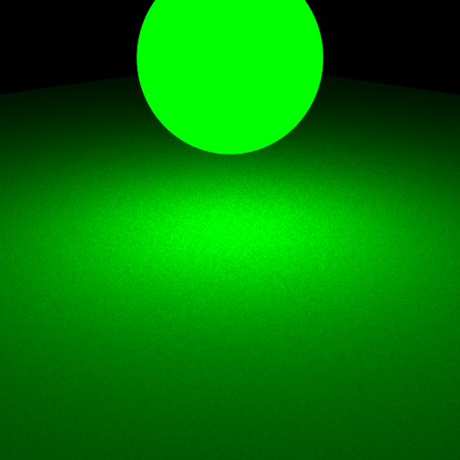
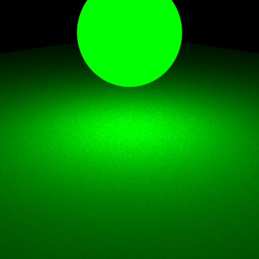
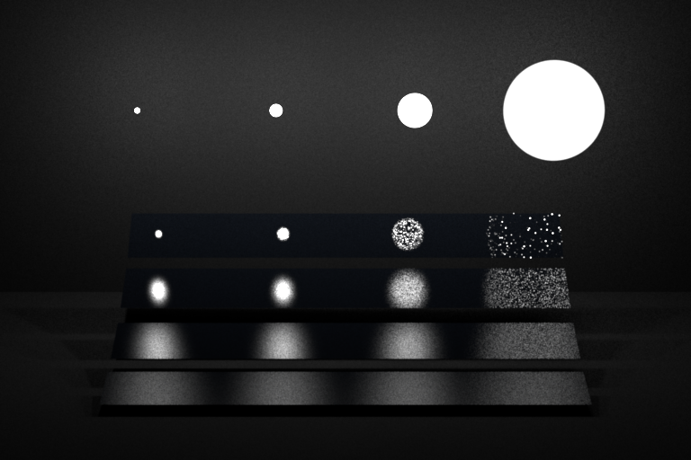
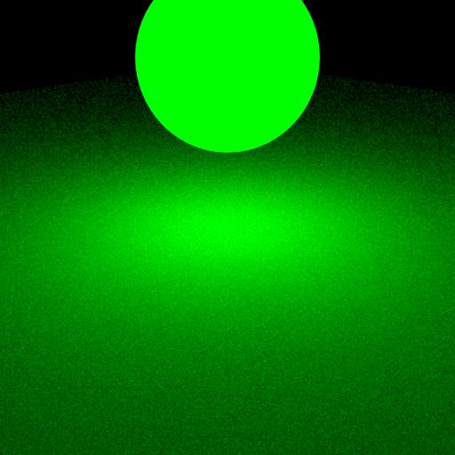
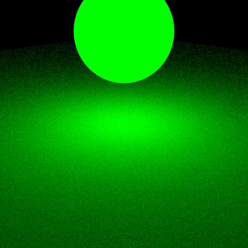
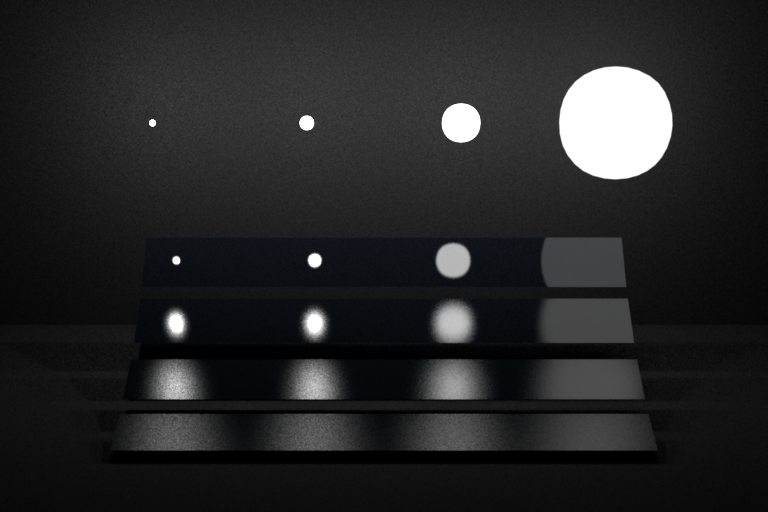

Part 1: Light Sampling
TODO: report problems, comments, and time spent...
Integrator Implementation
TODO: report implementation
Shape Area Light
TODO: report implementation
Validation
TODO: report test results (screenshot), and compare your rendering to reference images...
Point EMS

Sphere EMS


Sphere Mesh EMS
 

Sphere2 Mesh EMS


Oddysey EMS


Veach EMS


Part 2: BRDF Sampling
TODO: report problems, comments, and time spent...
Integrator Implementation
TODO: report implementation
Microfacet BRDF
TODO: report implementation
Validation
TODO: report test results (screenshot), and compare your rendering to reference images...
Sphere MATS
 

Sphere2 MATS


Oddysey MATS


Veach MATS


Part 3: Multiple Importance Sampling
TODO: report problems, comments, and time spent...
Integrator Implementation
TODO: report implementation
Validation
TODO: report test results (screenshot), and compare your rendering to reference images...
Oddysey MIS


Veach MIS


Image Validation
TODO: Show a 4-way comparison for each of the 2 scenes in your report. For each scene compare your 3 integrators (direct_ems, direct_mats, direct_mis) with the reference MIS rendering.
Comparison Oddysey
Comparison Veach